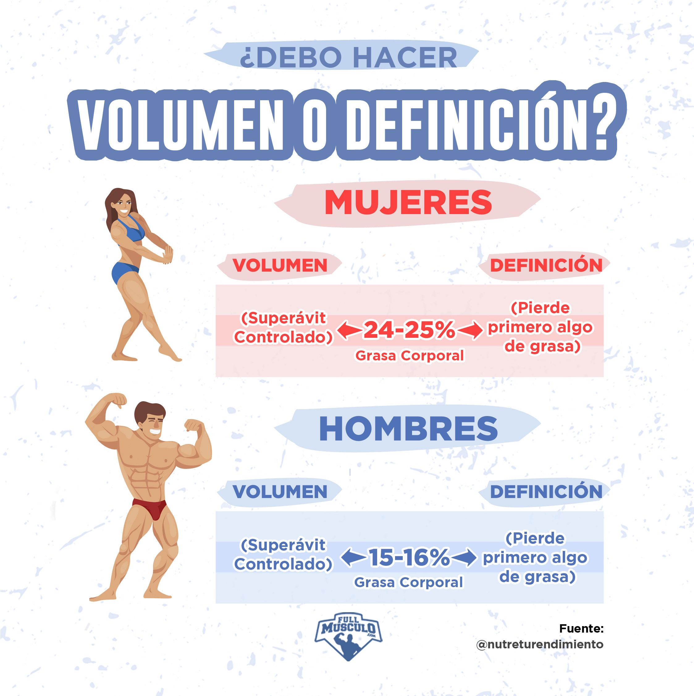

R.MENU
La etapa de volumen es la temporada en que los amantes de las pesas aprovechan para ganar masa muscular y subir de peso, y suele realizarse durante el otono-invierno aprovechando los meses de mas frio del ano.La etapa de definicion, al contrario que la de volumen, sirve para eliminar grasa y definir los musculos, y se suele realizar en primavera-verano. En este articulo, veremos en que consiste cada etapa y algunos consejos nutricionales y de entrenamiento.
Mucha gente piensa que ganar masa muscular es lo mismo que ganar peso o engordar y que para conseguirlo solo hay que aumentar la ingesta de calorias sin importar su procedencia; es decir, que hay que comer mas sin preocuparse de lo que se come, ya sean hamburguesas, pizzas, helados, pasteles, etc. Pero, lo cierto es que ganar musculo es bastante mas complicado de lo que para algunos puede parecer.
Para empezar, no es recomendable aumentar la ingesta de calorias sin ningun tipo de control, porque en lugar de ganar volumen, seguramente se acumulara grasa y la fase de volumen sera un absoluto fracaso. Hay que controlar la ingesta de calorias y su procedencia, priorizando fuentes de alimentos saludables.
En lineas generales, esta etapa consiste en crear un superavit calorico para ganar musculo, pero hay una diferencia abismal entre comer cualquier cosa que se antoje con la excusa de ganar peso, y comer de la forma correcta para mantener una buena salud y aumentar la masa muscular con la menor cantidad de grasa posible.
Por otro lado estan los entrenamientos, los cuales deben ser mas duros e intensos para forzar a los musculos a desarrollarse y crecer. Ademas, hay que aprovechar al maximo ese excedente de calorias (energia) para exprimir al maximo cada entrenamiento y conseguir los mejores resultados posibles.
Estas son algunas pautas para disenar un entrenamiento enfocado al aumento de volumen muscular:
Cuando se da por finalizada la etapa de volumen, da comienzo la etapa de definicion, cuyo objetivo es eliminar la grasa acumulada durante la fase de volumen para definir la musculatura que tanto ha costado ganar. Para ello, el factor mas importante es crear un deficit calorico en la dieta que nos permita deshacernos de la grasa y marcar los musculos.
Cuando hablamos de definir, se trata de recortar las calorias para eliminar el exceso de grasa y mantener la mayor cantidad de musculo posible. Aqui tampoco es recomendable reducir drasticamente la ingesta de calorias para perder peso rapido, ya que de esa forma perderemos la mayor parte del musculo durante el volumen..
En lineas generales, se debe aumentar la ingesta de proteinas y controlar la ingesta de carbohidratos y grasas para darle al cuerpo el combustible que necesita para eliminar grasa y mantener el musculo..
En cuanto a los entrenamientos, seran ligeramente diferentes que en la fase de volumen. Por ejemplo:.

Los expertos en la materia dicen que la diferencia entre las ganancias musculares y un simple aumento de peso, esta en los niveles de grasa. De hecho, si no haces una etapa de volumen bien hecha, no ganaras a penas masa muscular, y cuando llegue la primavera y empieces a definir, no habras conseguido una buena base muscular y no tendras nada que definir. Te quedaras delgado y sin forma.
Si alguna vez has querido conseguir unos pectorales grandes y voluminosos, un culo redondo, unos brazos mas grandes o unas piernas tonificadas, sabras que la etapa de volumen es vital para conseguir una buena base muscular.
Primero debes calcular tu TMB (tasa metabolica basal), que es la cantidad de energia que consume tu cuerpo en reposo, la cual se calcula en base a tu edad, peso, estatura y sexo. A partir de tu TMB podras calcular la cantidad de calorias que necesitas segun tus objetivos, simplemente anadiendo tu nivel de actividad fisica
Si necesitas ayuda para averiguar tu TMB, en Myprotein disponemos de una fantastica calculadora de macros que te ayudara a saber el numero exacto de calorias que necesitas para conseguir tus objetivos.
Cuando estes en superavit calorico, debes mantener una dieta saludable. Esa sera la diferencia entre un volumen limpio y un volumen sucio.
Un poco mas arriba hemos comentado que conseguir el peso ideal no es tan facil como muchos piensan, y sobre todo, si tienes un metabolismo acelerado y te cuesta mantener el peso mientras aumentas tu masa muscular, puede llegar a ser muy tentador ayudarte de la comida basura para conseguirlo..
Aunque estes en superavit calorico debes seguir alimentandote de forma saludable y evitar la comida basura, ya que esa es la diferencia entre acumular grasa o conseguir un volumen limpio.
Los hidratos de carbono son la fuente principal de combustible que tu cuerpo necesita durante la etapa de volumen, la cantidad de proteinas y grasas sera practicamente la misma, pero los hidratos de carbono aumentaran considerablemente..
No tienes que darte atracones de comida basura, necesitas hidratos de carbono sin procesar como la avena, el arroz integral o la batata, y si aun asi sigues necesitando mas calorias, la industria de la suplementacion deportiva tiene a tu disposicion una gran variedad de suplementos de hidratos de carbono, que son tan populares en invierno como los batidos de proteinas en verano..
De hecho, seguramente habra dias que no puedas consumir todas las calorias que necesitas mediante la comida, y por eso en Myprotein disponemos de THE Gainer, un novedoso suplemento de hidratos de carbono que te ayudara a completar tus calorias..
Otro muy buen consejo que podemos darte, es que reduzcas el ejercicio aerobico. Aunque hayas calculado tu consumo calorico teniendo en cuenta una intensidad muy alta de entrenamiento, puede que, si ademas estas haciendo demasiado cardio, eso consuma ese pequeno superavit calorico que te estaria dando el volumen que necesitas..